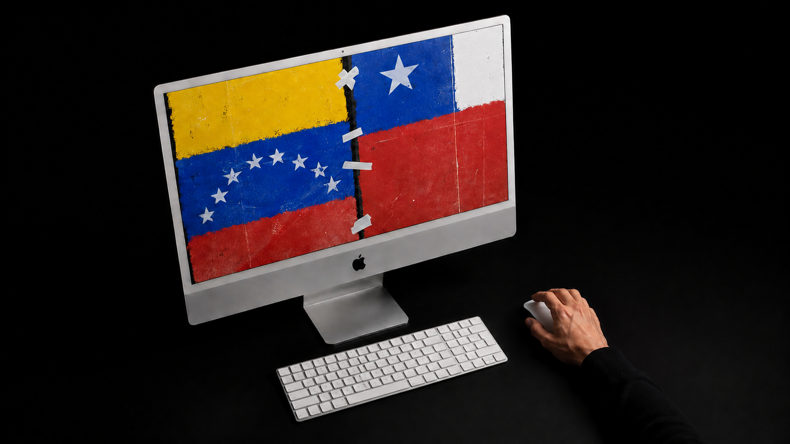
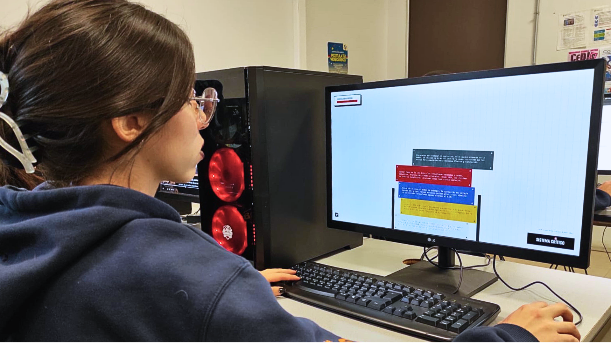
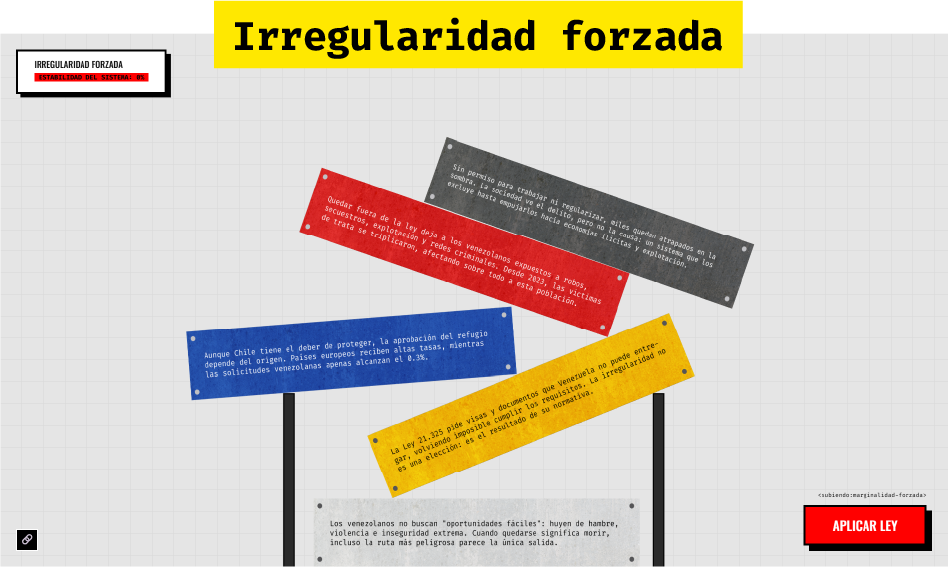
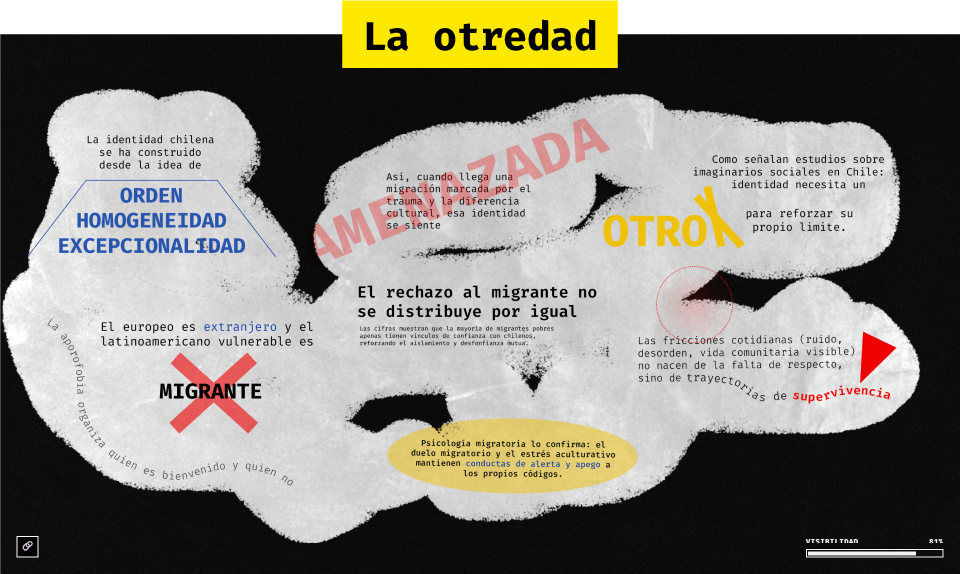
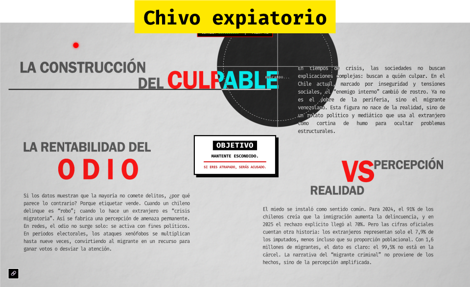
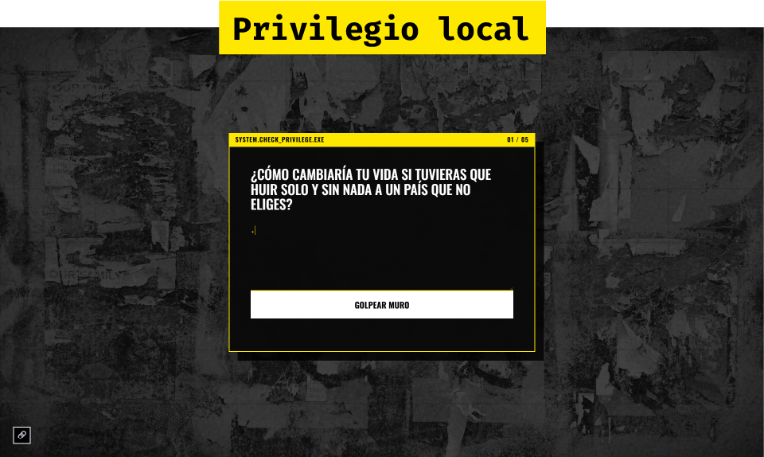
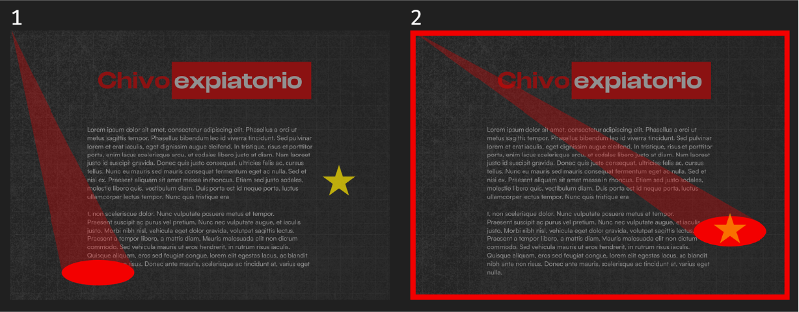
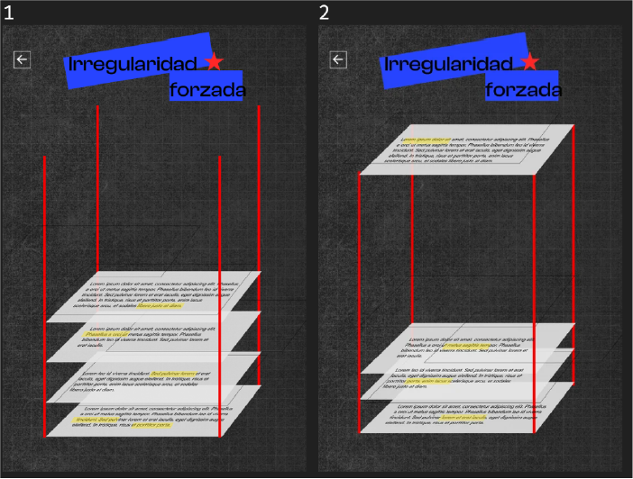
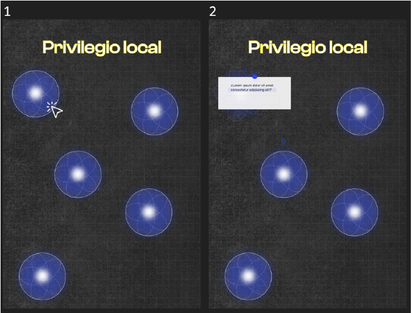
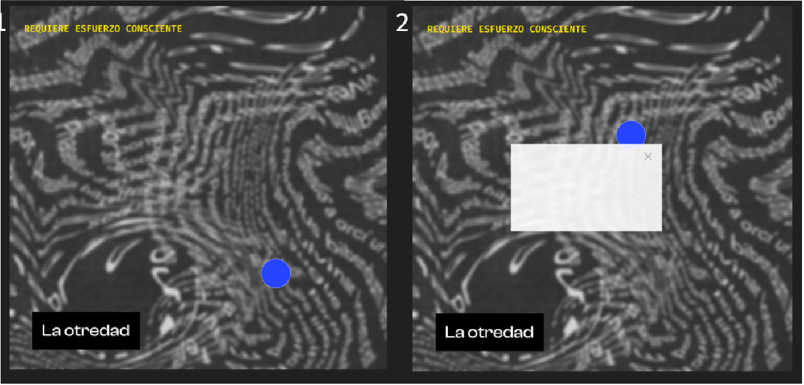

Irregularidad forzada: una política migratoria restrictiva que empuja a la marginalidad en vez de integrar, creando un escenario para la estigmatización.


Encargo: desarrollar un documental web sobre un tema social.
Decisión clave: traducir cada causa en una mecánica de interacción distinta, iterando cuando el concepto inicial no funcionaba en código.
Resultado: Frontera invisible es un documental web que usa el diseño y el código como herramientas de disección social.
4 secciones -> buscan generar reflexión frente a una crisis humanitaria: ¿Cuáles son las causas más relevantes de la xenofobia hacia inmigrantes venezolanos en Chile?
Irregularidad forzada: una política migratoria restrictiva que empuja a la marginalidad en vez de integrar, creando un escenario para la estigmatización.
Privilegio local: el juicio hacia el migrante desde la comodidad de instituciones que funcionan, sin reconocer que hay conductas como consecuencia de la supervivencia.
Chivo expiatorio: el uso mediático y político del migrante para desviar la atención de fallas estructurales internas, alimentado por una economía de la atención.
La otredad: un patrón histórico de construir identidad por exclusión, rechazando al migrante caribeño como amenaza a la autoimagen de orden.
Usé la conceptualización como recurso comunicativo, expresado a través del diseño y la experiencia de usuario. Cada sección incluye acceso a las fuentes citadas.

Las leyes activan bloques que caen sobre bases inestables hasta colapsar, remitiendo al funcionamiento de la política excluyente.

Una pantalla negra que el usuario "rocía" manteniendo el click, revelando lo que la sociedad prefiere censurar de sí misma.

Una mira vigilante persigue el cursor y emite alertas, simulando la hipervigilancia mediática y el miedo a ser señalado.

El usuario se enfrenta a preguntas de autocrítica que derriban los ladrillos de un muro que representa sus posibles sesgos.
Ninguna mecánica se mantuvo fiel a la idea original, todas se rediseñaron en código. La más compleja fue "irregularidad forzada", ya que necesitaba que los bloques cayeran de forma natural, y fue mi mentor quien me mostró las librerías de física de p5.js.





Este proyecto fue seleccionado para exposición en el Processing Day 2026